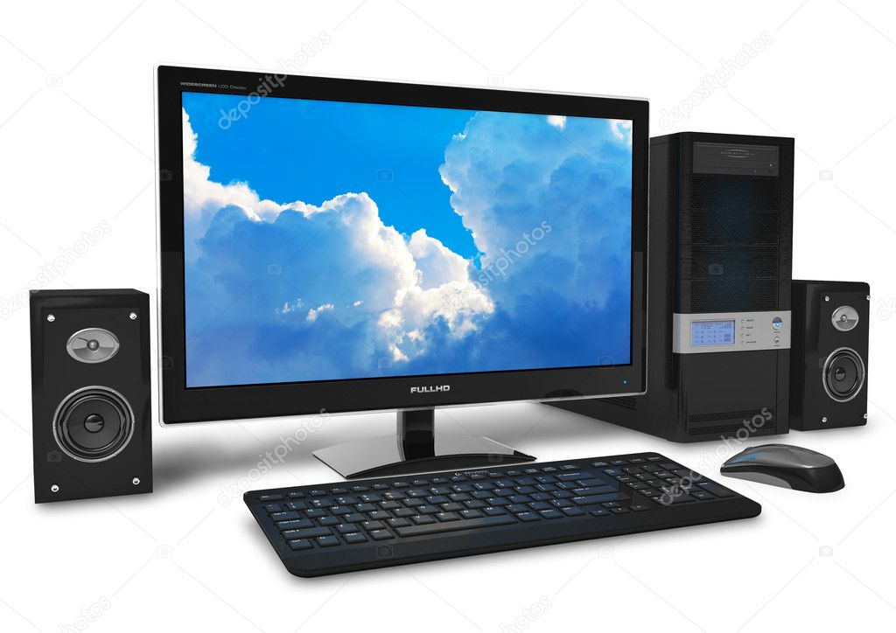

Partes de la Computadora
Informática I
Décimo Grado - Sección A/B
Docente: Pablo Antonio Peña Mancia
Fecha: 2026
Escritorio y Portátiles

Escritorio

Laptop
Preparando Actividad...
Área de Informática
Informática I
Décimo Grado - Sección A/B
Docente: Pablo Antonio Peña Mancia
Fecha: 2026

Escritorio
Laptop